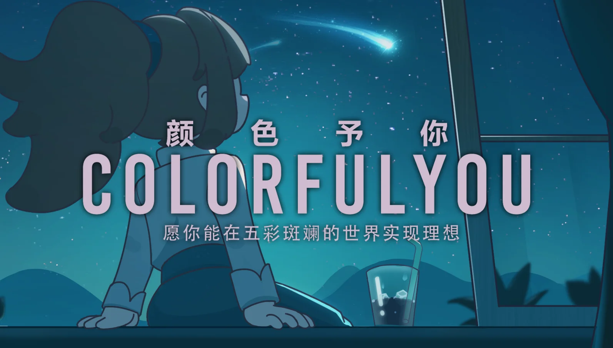
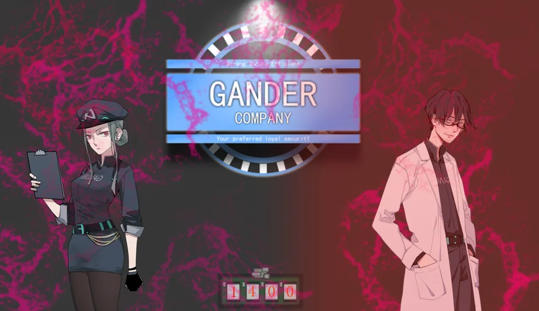

我
我是DorinXL，取自「荡影」的谐音，两个都是我的名字。英文名的适用范围更广泛就常用英文了。
“缄默慎独，事在人为，不破不立，疑行无成”是我在各种经历后总结的真言，随着体会的增加我还会总结更多，并切身践行。
一些经历
最开始我在网络安全的领域摸爬滚打，遗憾的是安全并不适合我。
2021年正式开始学习Unity，找回最开始选择计算机的初心。
2023
3 months
- 选择客户端开发方向，使用UE4作为开发引擎。
- 结业作业为在官方FPSDemo的基础上增加所学到的功能（修改游戏模式、UMG系统、基本物理、人物骨骼动画、AI基础），并提交开发文档。结业后颁发证书。
罗布乐思（深圳）数码科技有限公司
2 months
- 使用Roblox官方编辑器(ts/Lua)完成一款类大逃杀小游戏的开发和维护工作。
- 负责整个小游戏周期的研发与上架。
2021
一些作品
从闭门造车到与人组队、走进游戏圈，一路陪伴我的除了梦想、热爱还有或惺惺相惜，或萍水相逢的开发者们。
在以后的时间里，希望能慢慢搭建出自己的世界。




建站记录
是的，我不想备案，还喜欢白嫖，GitHub Pages最适合我了。
2020.05.27：开始第一次使用GitHub Pages，主题为jekyll-theme-hacker
2022.09.20：在GitHub Pages使用个人主题，并重新布置内容
2024.08.25：开新项目，使用Hugo前端Stack主题，并用私有仓库+workflow存储并更新博客数据。
- 备份博客园博客并导出xml，解析后按文件夹创建Hugo形式的post文章及本地图片
- 添加统计信息（网站运行时间、字数统计）
- 更新分类设置，分配底色和图片标识
2024.08.28: 更新友链,更好看的双列，更新不再上线的链接：
- 参考： Echosec的博客
2024.08.30:更新about界面，添加了时间轴和卡片两个短链接
- 时间轴参考： metalblueberry’s Blog
- 更多shortcode： 眠于水月间的博客
2024.08.31: 美化时间轴css
2024.09.01：时间轴适配移动端，跳转链接标识、全站字体、About更新、页面布局、头像与站点描述居中显示
- 参考： 眠于水月间的博客、XR_G’s Blog
2024.09.02：整个博客基本搭建完毕。
- 调整category的背景图片和字体
- About界面基本完成
- 更多图片
- 博客背景颜色
- 标签块样式
最后
喜欢折腾，建站就很能享受折腾的乐趣。事事都有反馈，并乐此不疲，我喜欢做这样的事情。
建站的动机我也说不好，但现实生活难以建功立业，至少可以让数字生命永垂不朽。
在互联网找一片角落支个小摊，与有缘人相识，当赛博行者，递电子名片。